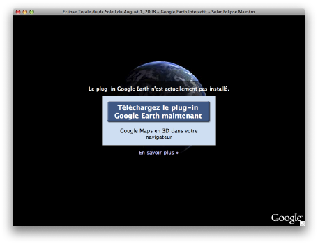

Fenêtre d’installation du composant Google Earth
Si vous n’avez pas encore installé le plug-in Google Earth, alors l’écran d’installation suivant s’affichera.
-
Cliquez sur le bouton «Téléchargez le plug-in Google Earth maintenant» pour lancer la première phase de l’installation ne fonctionnera pas. Il vous faut lancer votre navigateur Internet à l’adresse suivante: http://code.google.com/apis/earth/.
